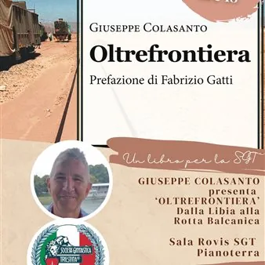

da sab 14 nov a sab 9 gen
Un libro per la SGT Società Ginnastica Triestina
Quattro appuntamenti dedicati alla letteratura triestina, tra storia, saggistica e narrativa. Riparte, dal prossimo 14 novembre, il ciclo di eventi ‘Un libro per la SGT’ negli ambienti della Fondazione Ginnastica Triestina. La Ginnastica offre infatti dal 2021 i propri spazi per…
 Indicazioni
Indicazioni
- Costi e prenotazioni
- Costo non indicato · Prenotazione non indicata
- Programma
- Programma da verificare. Apri la fonte ufficiale per orari e possibili aggiornamenti.
- In caso di maltempo
- Nessuna indicazione specifica pubblicata.
- Note
- Acquisito automaticamente dalla fonte.
L’EVENTO
Descrizione completa
Quattro appuntamenti dedicati alla letteratura triestina, tra storia, saggistica e narrativa. Riparte, dal prossimo 14 novembre, il ciclo di eventi ‘Un libro per la SGT’ negli ambienti della Fondazione Ginnastica Triestina.
La Ginnastica offre infatti dal 2021 i propri spazi per le presentazioni di opere letterarie: durante i cinque anni precedenti sono stati dibattuti romanzi, saggi, fumetti e poesie.
Il filo rosso comune a queste opere è un inconfondibile ‘triestinità’ legata alle origini dell'autore o al soggetto trattato.
Per l’autunno 2026 (con una deviazione nel 2027) la SGT offre quattro appuntamenti nei weekend, organizzati al Museo sociale o presso la sala Primo Rovis. L’autore presenterà la propria opera affiancato dal curatore del Museo e dell’archivio sportivo Zeno Saracino.
Il primo appuntamento è previsto sabato 14 novembre, alle ore 18, nella sala Primo Rovis: Giuseppe Colasanto, ex vice questore della Polizia di Stato e funzionario dell'agenzia UE International Centre for Migration Policy Development, presenterà “Oltrefrontiera” (Gaspari Editore, 2024), raccontando quarant’anni di esperienze sui confini del mondo. Dal Medio Oriente ai Balcani, dal Nord Africa a Lampedusa. Senza trascurare Trieste.
Si prosegue, la settimana successiva, con il romanzo “1912: Psicodramma triestino” (Lettere Scarlatte, 2025) dello scrittore Angelo Dolce: sabato 21 novembre, alle ore 18, presso la sala Museo l’autore esplorerà le (tante) tematiche del libro; un’affascinante digressione su musica, letteratura e psicanalisi della inquieta Trieste alle soglie della prima guerra mondiale. Venerdì 4 dicembre, alle ore 18, sempre nella sala Museo la scrittrice Rosella Soranzo presenterà “Polvere nera. Il ricordo della miniera di Arsia” (Lettere Scarlatte, 2025), romanzo breve dedicato alla tragedia dei minatori istriani nel 1943, rimasta a lungo “sepolta” dalla memoria collettiva. Le umili vite degli operai di Albona rivivono in un romanzo doloroso, ma senza facili pietismi.
Con un salto al 2027 il sabato 9 gennaio, alle ore 18, presso la sala Primo Rovis Danilo Pagliaro tornerà alla Ginnastica Triestina, a quattro anni dall’incontro nel 2023, per parlare della sua esperienza nella Legione Straniera con la scrittrice Sara Colombo. Ex sottufficiale della Legione Straniera francese, Pagliaro racconterà in particolare con l’ultima opera della Colombo la propria esperienza in Africa, negli anni Novanta.
La partecipazione è gratuita; è possibile prenotarsi presso curatore@societaginnasticatriestina.it. La capienza, nel caso della sala Museo, è limitata a 20 posti.
IL PROGRAMMA
Programma e orari
Appuntamenti raccolti dalle fonti elencate. Dove manca un orario, non è ancora disponibile in questa scheda.
Programma pubblicato
- Dal 2026-11-14 al 2027-01-09
INFORMAZIONI UTILI
Prima di partire
- Controllare la fonte prima di partire.
ORGANIZZAZIONE